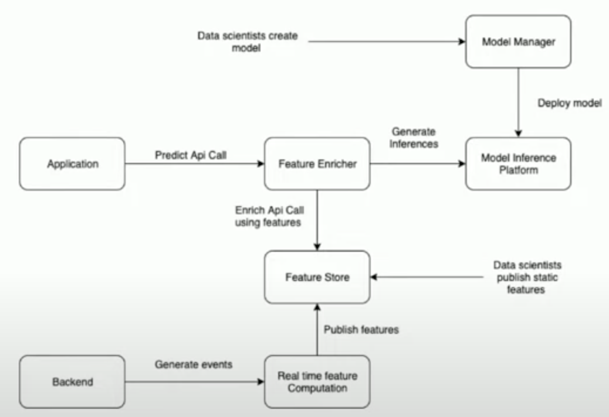

Zomato: Real-time ML¶
What is Machine Learning?
Core Concept: Given an input (e.g., an image), extract features (e.g., RGB values of pixels), pass these features to a classification algorithm (a “black box” that has learned from past data, like a linear combination or more complex models like XGBoost), which then produces an output (e.g., “car” or “not car”).
Feature Types:
Real-time Features: Computed based on immediate events. Example: For Zomato recommendations, the last restaurant a user clicked on (e.g., if Haldiram was clicked, next might be Bikanerwala, both being “chaat” places).
Static Features: Computed on a historical basis. Example: Restaurant attributes like cuisine type or dishes served.
Model Variety: Different algorithms can be used, such as regression or tree-based models.
ML @Zomato (Use Cases)
Predicting Kitchen Preparation Time (KPT): Estimate how long a restaurant will take to prepare an order given the dishes. Crucial for optimizing rider dispatch (don’t send rider too early if prep time is long).
Predicting Rider Assignment Time: Estimate time to find and assign a rider, especially during peak hours with high order volume and rider density.
Personalization and Recommendations: Show relevant restaurants to users when they open the app.
Fraud Detection: Identify fraudulent activities by users, merchants, or riders.
Photo Classification: Classify user-uploaded photos as food, menu, or ambiance.
Rider Allocation: (Implicitly related to KPT and Rider Assignment Time) Efficiently assigning riders to orders.
Challenges (Pre-Platform)
Dependency on Engineers for Deployment: Data scientists created models, but relied on engineers for production deployment, especially for real-time inference.
No Standard Workflows: Lack of standardized processes for model deployment.
Inability for Data Scientists to Push Features: Data scientists performed offline analysis and feature construction, but couldn’t easily push or manage features for production.
No Platform for Real-Time Feature Computation: Difficult to compute and use features in real-time at scale.
Many One-Off Production Systems: Ad-hoc solutions for serving, leading to inconsistencies (e.g., some using Redis, some MySQL for feature storage).
Requirements (for the New Platform)
Enable Data Scientists: Allow them to easily build and deploy ML models at scale across the company (autonomy). DS are not expected to be full-fledged software engineers.
Platform for Real-Time and Static Feature Computation & Pushing: Data scientists should be able to directly push static features.
Ability to Store and Version Models: A “GitHub for models” for auditing and versioning.
Low Latency Real-Time Inference: Predictions should take less than 50ms (P99).
Fast Time to Production: Model deployment should be less than a week.
Case Study: KPT Prediction
Model: In-house XGBoost-based model.
Input Features:
Static Features: Historical KPT for the specific restaurant and time slot.
Real-Time Features: Number of currently running/pending orders at that restaurant at that specific point in time.
Goal: Predict how long a restaurant will take to prepare a given order based on items, cost, etc.
Proposed Architecture (and its Components)
Model Manager (MLFlow):
Purpose: Platform for data scientists to develop, log, and manage their models independently.
Technology Choice: Evaluated MLFlow and Kubeflow. Chose MLFlow because it was very easy to set up (speaker set it up in ~1 hour), whereas Kubeflow (Kubernetes-based) had a steeper learning curve as the team lacked prior extensive Kubernetes experience.
Functionality: Allows versioning of models (e.g., KPT model v1, v2, v3, with v3 in production).
Real-Time Feature Computation (Apache Flink):
Need: A stream processing framework to calculate real-time features (like running orders at a restaurant) by listening to order-level events (from order service/backend).
Technology Evaluation: Spark Streaming, Kafka Streams, and Flink.
Technology Choice (Flink): Chosen due to its strong community, ease of setup, and crucial job-level isolation.
Job-Level Isolation Importance: With hundreds of models and tens of jobs per model, one job failure (e.g., KPT job) must not affect others (e.g., rider assignment job).
Feature Store (Real-Time & Static):
Real-Time Feature Store (AWS ElastiCache backed by Clustered Redis):
Requirements: Store features produced by Flink, easily scalable for high write and read throughput, eventual consistency is acceptable (data can reflect after 5-10 seconds).
Technology Choice (ElastiCache/Redis):
Supports adding shards for write scaling and read replicas for read scaling.
Managed service providing automatic failovers (high availability).
Very low read/write latency.
Supports TTL for features (many real-time features are short-lived, e.g., 2-5 mins).
Scale Example (KPT): ~10 features/output * 100k+ restaurants every minute = ~1 million writes/minute. Reads can be up to 100k RPM from users building carts.
Static Feature Store (Cassandra):
Requirements: Store static features (e.g., historical KPT for a restaurant/time slot), key-value access, eventual consistency, high read throughput.
Technology Evaluation: Redis, Cassandra, DynamoDB.
Technology Choice (Cassandra): Chosen for cost-effectiveness and the team’s prior experience using it (over Redis which is in-memory and more expensive for this type of static data).
Model Inference Platform (AWS SageMaker):
Purpose: Deploy models for real-time inference.
Technology Evaluation: Elastic Beanstalk, ECS, AWS SageMaker.
Technology Choice (SageMaker):
Very easy to set up (model up and running in a day).
Provides direct integration with MLFlow (can deploy models from MLFlow to SageMaker with a single command).
Handles inbuilt auto-scaling, logging, and monitoring.
Monitoring: Grafana dashboards show invocations and model latency for deployed SageMaker endpoints.
ML Gateway (In-house Go service - “Feature Enricher”):
Purpose: A system to stitch everything together for real-time inference. Acts as a central point for applications to call for predictions.
Functionality:
Receives predict API call from an application.
Fetches necessary features from the Feature Store (both real-time Redis and static Cassandra).
Enriches the request with these features.
Sends the enriched request to AWS SageMaker for inference.
Gets the inference result and sends it back to the application.
Implementation: KPT Plan (YAML configuration) defines the workflow for the ML Gateway (fetch features, get KPT prediction from SageMaker, publish).
Final Architecture Diagram:
Data Scientist Workflow: Creates models and logs them in MLFlow.
Deployment: Engineers deploy models from MLFlow to AWS SageMaker.
Real-Time Path:
Application calls ML Gateway.
ML Gateway enriches API call with features from Feature Store.
ML Gateway calls SageMaker using enriched features.
SageMaker returns inference to ML Gateway, then to Application.
Feature Generation Path:
Backend generates events to Flink via Kafka.
Flink performs real-time feature computation.
Flink publishes real-time features to the Feature Store (Redis) via Kafka.
Data scientists publish static features to the Feature Store (Cassandra) via Kafka (or other batch processes).
Future Work
Ability to shadow models: Test new models (e.g., KPT V2) on real traffic via ML Gateway before taking them live, without impacting users.
Archiving real-time features to S3: Store features from Redis/Feature Store to S3 for model retraining.
Ability to retrain models automatically: Schedule model retraining at a fixed frequency.
Tracking model performance online: Continuously monitor model performance in production.